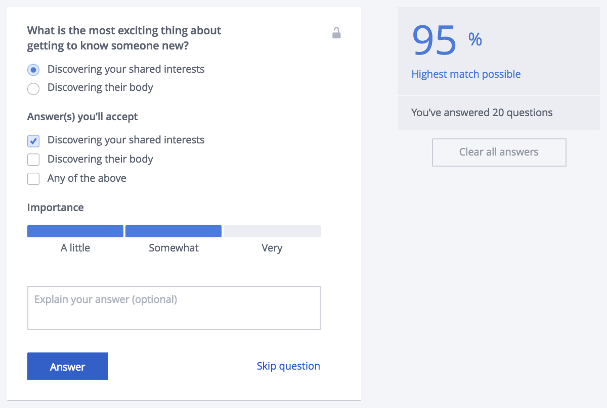

Does this look familiar? To the 1M unique individuals who login to OkCupid each day, it will.
But how are these questions used by OKC to generate matches? How does each question change the pool of matches available to an individual?
We asked users to describe how OKC matches them:
“I have no idea how they do it.”
“I thought...it was through the questions you answer? Based on how important they are to you. Through some algorithm. I don’t understand how it works, but it doesn’t seem very accurate to me. When you’re answering the questions, they don’t really matter to you that much but you’re forced into saying they matter at least a little bit.”
“I’m not sure how it matched me with people, I filled out a lot of those questions and I guess those were supposed to have matched me algorithmically or something like that but I don’t know if I ever saw the connections between the questions and the people it tried to match me with.”
“I used to try to tailor my answers to attract certain types of people, but the more I used it the more random it felt. Even with the algorithm and match percentage, you still really don’t know what you’re going to get.”
Here's some info on algorithmic transparency. Here's some info on algorithmic transparency. Here's some info on algorithmic transparency. Here's some info on algorithmic transparency. Here's some info on algorithmic transparency. Here's some info on algorithmic transparency. Here's some info on algorithmic transparency. Here's some info on algorithmic transparency. Here's some info on algorithmic transparency. Here's some info on algorithmic transparency. Here's some info on algorithmic transparency. Here's some info on algorithmic transparency.
Here's some of our interviews and results. Here's some of our interviews and results. Here's some of our interviews and results. Here's some of our interviews and results. Here's some of our interviews and results. Here's some of our interviews and results. Here's some of our interviews and results. Here's some of our interviews and results. Here's some of our interviews and results. Here's some of our interviews and results. Here's some of our interviews and results. Here's some of our interviews and results.
Here's a quick description of our tool click here to continue and try it for yourself!